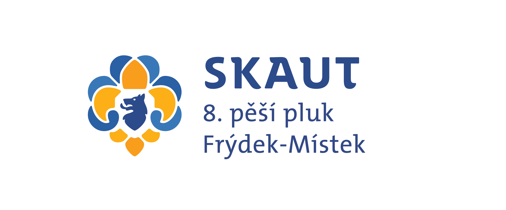
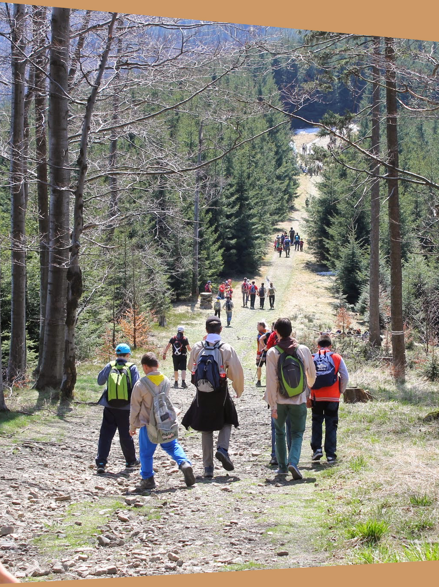

Junák - český skaut, středisko 8. pěšího pluku slezského Frýdek-Místek, z.s.
28. řijna 781, 738 01 Frýdek-Místek
IČO: 47999853
č.u.: 2400192485/2010
Kontakt:
Michal Břežek (vedoucí střediska)
m.brezek@gmail.com
+420 723 327 863
